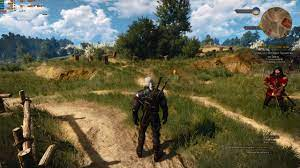
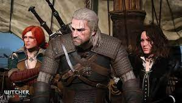
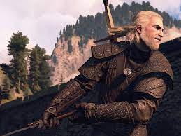
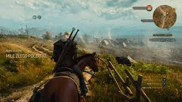
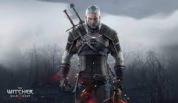

"Wiedźmin 3: Dziki Gon" to trzecia odsłona popularnej serii gier RPG, wyprodukowana przez polskie studio CD Projekt RED i wydana w maju 2015 roku. Gra zdobyła ogromne uznanie zarówno od krytyków, jak i graczy, stając się jednym z najwyżej ocenianych tytułów w historii gier wideo. Główne cechy gry obejmują otwarty świat, składający się z różnorodnych lokacji, od rozległych krain po miasta, lasy i góry. Gracz wciela się w postać Geralta z Rivii, wiedźmina o specjalnych umiejętnościach w walce, magii i alchemii. Gra kładzie duży nacisk na moralne wybory gracza, które mają wpływ na rozwój fabuły i postaci. Fabuła oparta jest na bestsellerowej serii książek Andrzeja Sapkowskiego, a gracze śledzą historię Geralta, który poszukuje adoptowanej córki Ciri, kluczowej postaci dla losów świata. Decyzje podjęte podczas dialogów i misji mają realne konsekwencje. "Wiedźmin 3: Dziki Gon" zachwyca wysoką jakością grafiki, szczegółowymi modelami postaci i krajobrazów, a także epicką ścieżką dźwiękową, tworzącą niepowtarzalny klimat. Po premierze gra otrzymała dodatki i rozszerzenia, takie jak "Krew i Wino" oraz "Serca z Kamienia", dodające nowe obszary do eksploracji i rozwijające fabułę. Całość stanowi jedno z najważniejszych osiągnięć w gatunku gier RPG, łącząc epicką opowieść, rozbudowany świat oraz wyjątkową oprawę audiowizualną.